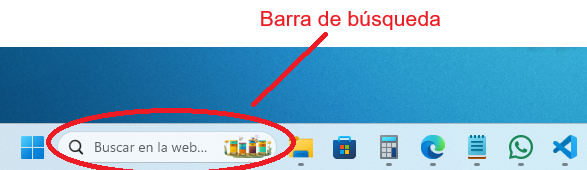
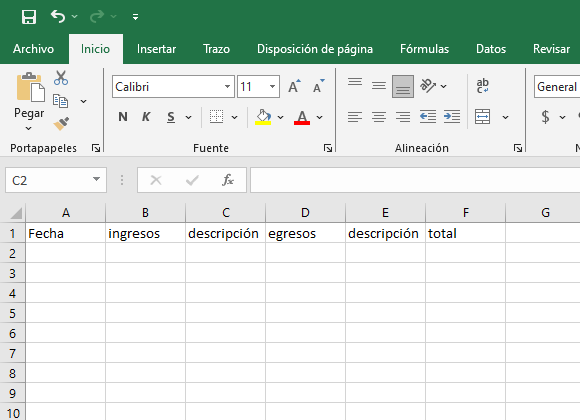
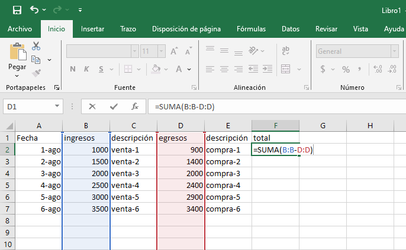

Office
Excel
Esta herramienta es muy util para diversas áreas, desde la administración hasta la ingeniería.
Sólo se va a explicar de manera superficial pero es bueno acotar que incluso sirve para programar, lo que quiere decir que es recomendable tomar un curso para manejar excel a profundidad.
Se trata de una hoja de cálculo, en cuanto a las pestañas superiores, no tienen mucha diferencia con el resto de las otras, excepto por la pestaña "fórmulas" que le es propia.
En resumen, consta de una serie de filas y columnas que forman una matriz de celdas en las que se pueden insertar datos, pero lo interesante es la capacidad que tienen esas celdas de interactuar entre sí, pudiendo hacer cálculos que de otra forma llevarían mucho tiempo y esfuerzo.
Se ha convertido en una herramienta indispensable en las áreas administrativas, de informática e ingeniería.
Practiquemos un poco:
La aplicación Power Point Sirve para hacer presentaciones.
Seleccione la respuesta correcta:
Practiquemos un poco:
Vamos a crear una hoja de presupuestos con Excel
a. Ubicamos el cursor en la barra de búsqueda:
b. Escribimos "excel" sin comillas y de la lista desplegable seleccionamos la aplicación que dice "Excel"
c. Esperamos unos segundos, dependiendo de nuestra máquina, y debería aparecer nuestra aplicación, y seguidamente pulsamos sobre el icono que dice "Libro en blanco", así:
d. En las celdas superiores vamos a llenar las celdas con información relacionada a un presupuesto: "Fecha", "ingresos", "descripción", "egresos", "descripción", "total", cada uno en una celda diferente. (a los que sepan de administración y contaduría, me disculpan, por favor)
e. En las celdas subsiguientes, vamos a colocar montos y descripciones de ejemplo, pueden usar las suyas para practicar.
f. En la celda que está debajo de total, vamos a escribir una fórmula sencilla: "=SUMA" y la seleccionamos de la lista que se despliega (para escribir cualquier otra fórmula, comenzamos con el símbolo de igualdad "=")
g. Una vez seleccionada la opción SUMA, esta aparecerá en la barra de fórmulas en espera de ser completada.
h. Siguiendo la sugerencia, tocamos la celda "B" seleccionando toda la columna.

i. Luego, escribimos el símbolo de resta "-" y finalmente, siguiendo la sugerencia, tocamos la celda "D" seleccionando toda la columna.
j. Finalmente, presionamos la tecla "Enter" y debería aparecer el total de los ingresos menos los egresos.

k. Para ver mejor todo, presionamos la tecla "control" y sin soltarla, tocamos con el ratón las celdas "B", "D" y "F", y una vez sombreadas, tocamos el menú desplegable que dice "General".
l. En el menú desplegable, seleccionamos la opción "Moneda" y debería aparecer el símbolo de moneda en las celdas seleccionadas.
m. Finalmente, para guardar el archivo, seguimos los mismos pasos que dimos con las aplicaciones "Word" y "PowerPoint".